A Pré-História é como o grande começo da nossa história, um período que vai desde o surgimento dos primeiros humanos até o momento em que começamos a registrar nossas vidas por meio da escrita, cerca de 5.000 anos atrás. No início, no Paleolítico, vivíamos como caçadores e coletores, criando ferramentas simples de pedra para nos ajudar a sobreviver. Com o tempo, no Neolítico, aprendemos a cultivar a terra e a domesticar animais, o que fez com que nos estabelecêssemos em pequenos vilarejos. Essas transformações foram essenciais para a nossa evolução e deram início a muitas das formas de organização que conhecemos hoje. Estudar a Pré-História é como olhar para as raízes da humanidade, para o momento em que tudo começou a se transformar.
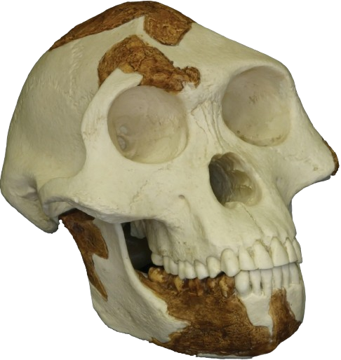
Lucy, Um dos fosséis mais famosos da espécie "Australopithecus Afarensis".
Lucy, Um dos fosséis mais famosos da espécie "Australopithecus Afarensis".
Viveu onde hoje é a Etiópia, andava ereta e usava ferramentas simples.
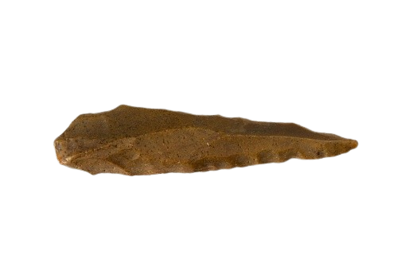
"Pedra Lascada" refere-se à Idade da Pedra Lascada (Paleolítico), o período pré-histórico em que os primeiros humanos criaram ferramentas cortantes lascando pedras para caçar e coletar, ou a uma formação rochosa turística no Ceará, Brasil.
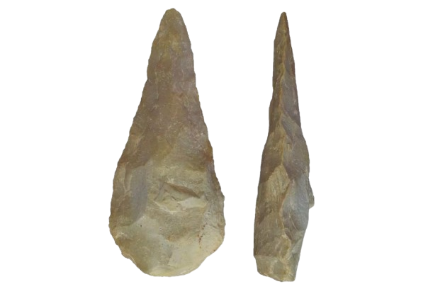
Foi utilizada pelos primeiros hominídeos para cortar carne, quebrar ossos e defender-se.
Foi utilizada pelos primeiros hominídeos para cortar carne, quebrar ossos e defender-se.
Marca o inicio da chamada Indústria Lítica
O controle do fogo.
A partir daqui, o ser humano começou a cozinhar alimentos, se aquecer e afugentar predadores.
Foi um avanço essencial para a sobrevivência humana.
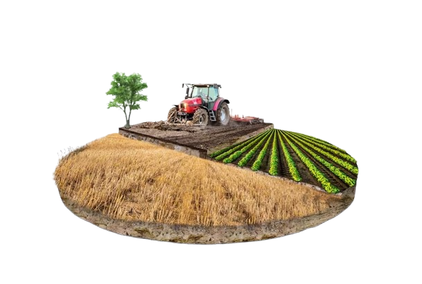
A Agricultura e o Sedentarismo
A Agricultura e o Sedentarismo
Aqui começa o nascimento da Agricultura e da vida nas vilas.
O ser humano deixou de ser nômade e passa a se estabelecer em comunidades estáveis.
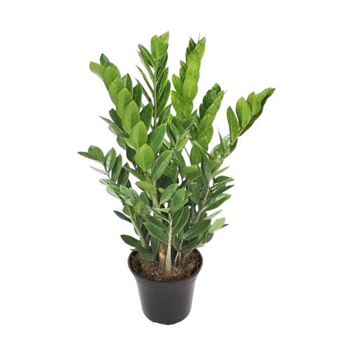
Com a descoberta do cultivo, os humanos começaram a domesticar plantas e
Com a descoberta do cultivo, os humanos começaram a domesticar plantas e
puderam se estabelecer em lugares com solos fertéis
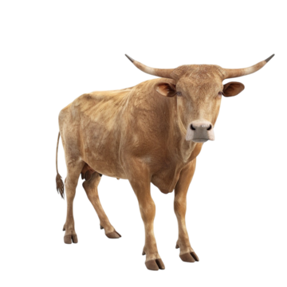
A criação de boi e gado foi descoberta em 7.000 . O período neolítico
A criação de boi e gado foi descoberta em 7.000 . O período neolítico
transformou caçadores-coletores em criadores, e possibilitou a criação do boi para obter leite, carne e couro.

Os animais de tração eram usados para arar a terra e transportar cargas.
Ele facilitou a agricultura e o comércio primitivo.
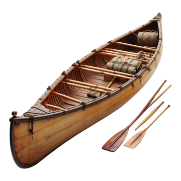
As canoas e as Balsas
As canoas e as Balsas
As primeiras canoas eram feitas de troncos escavados, sendo usadas para pescas e
explorações de rios. Aqui começou a navegação marítima.
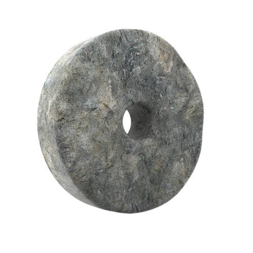
A invenção da Roda
A invenção da Roda
A primeira revolução no transporte. Ela foi aplicada em carros de animais de tração
Ela facilitou mais ainda o comércio e as mudanças sociais.
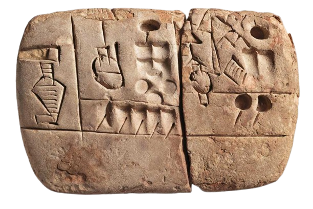
A Escrita Sumérica
A Escrita Sumérica
Usada para os primeiros registros comerciais, leis e religião.
Foi criada na Mesopotâmia.
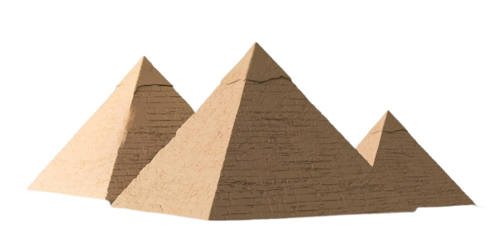
As pirâmides
As pirâmides
Era um símbolo de poder e religiosidade Egípcia.
As pirâmides, na época, eram uma maravilha da engenharia.
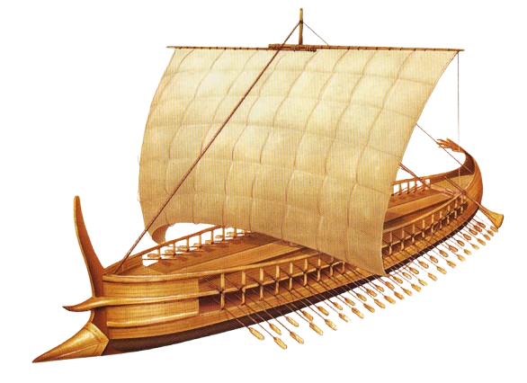
Os navegadores do Mediterrâneo.
Os navegadores do Mediterrâneo.
As primeiras canoas eram feitas de troncos escavados, sendo usadas para pescas e
explorações de rios. Aqui começou a navegação marítima.
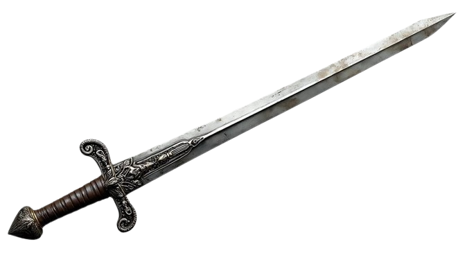
As espadas
As espadas
As primeiras ferramentas mais resistentes.
Houve mudanças nos conflitos e até mesmo no trabalho agrícola.
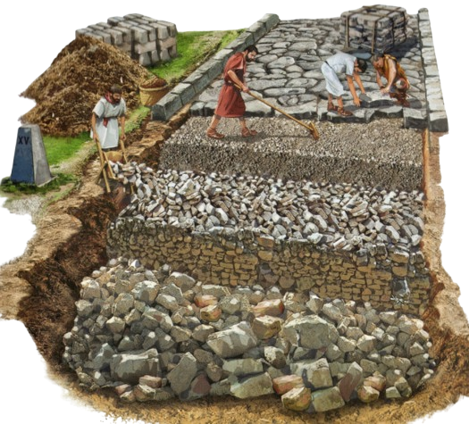
As estradas Romanas.
As estradas Romanas.
As primeiras estradas pavimentadas, ligando o império Romando.
Facilitavam o transporte, comércio e tropas.
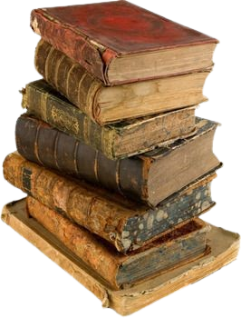
As bibliotecas romanas.
As bibliotecas romanas.
O armazenamento de conhecimento.
Cópias de obras gregas e romanas. Foram armazenadas para o estudo. Como a biblioteca de Cesáreia
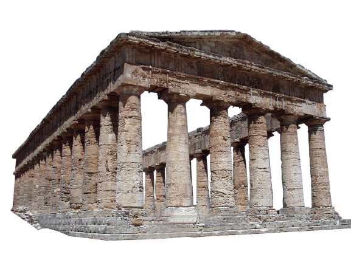
A queda do Império Romano do Ocidente